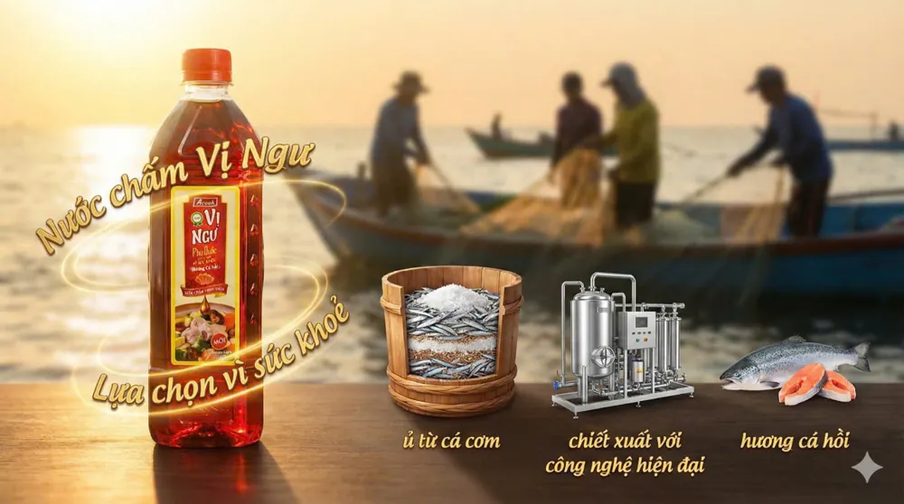
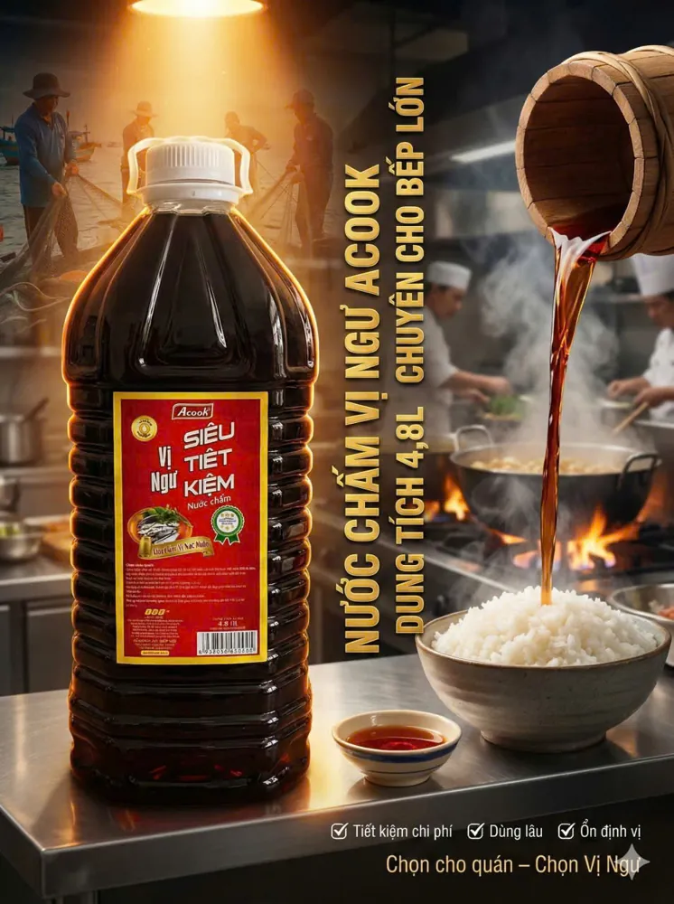

Gia đình & bếp ăn
Nước chấm, hạt nêm, nước tương, sa tế đóng chai, đóng túi tiện dùng hằng ngày.
- Chai 500ml đến 900ml
- Hạt nêm gói 200g, 400g, 900g
Nước mắm Acooki được chế biến từ nguồn nguyên liệu tươi ngon, ủ và lên men tự nhiên qua quy trình truyền thống để giữ lại trọn vẹn dưỡng chất và hương vị nguyên bản.
Màu hổ phách óng ánh cùng hương thơm nồng nàn làm món ăn thêm hấp dẫn, và mang lại sự hài lòng cho mỗi bữa cơm gia đình.

Dù bạn nấu cho gia đình, vận hành bếp quán, phân phối hàng tiêu dùng hay muốn có thương hiệu riêng, Acooki có quy cách và hình thức hợp tác phù hợp.
Nước chấm, hạt nêm, nước tương, sa tế đóng chai, đóng túi tiện dùng hằng ngày.
Quy cách lớn, giá theo thùng, đáp ứng nhu cầu dùng đều và số lượng nhiều.
Chính sách ưu đãi riêng của Công ty TNHH Kỹ Nghệ Thực Phẩm Tân Bình dành cho đối tác kinh doanh.
Gia công nước mắm độc quyền cho doanh nghiệp, sản xuất tại nhà máy Acooki ở Củ Chi.
Những quy cách được khách hàng chọn nhiều nhất: nước mắm Vị Ngư, nước mắm Nhĩ Ngư và hạt nêm Acook.
Gợi ý của Acooki cho bếp nhà, bếp quán và gian hàng của bạn.
Từ nước mắm nguyên chất đến hạt nêm, nước tương, sa tế, tương ớt và hóa phẩm gia dụng, đủ quy cách cho gia đình lẫn bếp lớn.
Nguyên vị, nguyên chất, đậm đà. 7 quy cách từ chai 500ml đến can 4,8 lít.
Xem sản phẩmPhú Quốc, vị cá cơm đậm đà. 7 quy cách từ chai 500ml đến can 4,8 lít.
Xem sản phẩmHạt nêm Acook 3 trong 1, hạt nêm chay nấm và bao lớn 5kg, 10kg.
Xem sản phẩmThịt, xương ống, tủy; có hạt nêm chay và bao lớn 5kg, 10kg.
Xem sản phẩmTừ đậu nành tuyển chọn, đậm đà cho mọi bữa cơm.
Xem sản phẩmSa tế cay chuẩn vị quán và sa tế tôm chua cay dậy mùi.
Xem sản phẩmCay sánh ngon, đậm vị quen cho bữa cơm nhà.
Xem sản phẩm6 trong 1, thơm lâu, sạch sâu. Can 3,8L và túi 2L.
Xem sản phẩmChanh 3 in 1 sạch dầu mỡ, thơm mát, dịu nhẹ da tay.
Xem sản phẩmMỗi giọt nước mắm Acooki đi qua quy trình truyền thống từ chọn cá, ủ chượp đến lọc và đóng chai.
Chọn những lứa cá cơm tươi ngon nhất.
Chọn loại muối tốt nhất, không chát, không đắng.
Trộn cá và muối theo đúng tỉ lệ.
Ủ cá trong chượp để cá lên men tự nhiên.
Phơi chượp để thành phẩm thơm hơn và lên màu đẹp hơn.
Lọc để loại bỏ tạp chất và váng mắm.
Đóng chai và bảo quản theo quy trình.
Acooki gửi đến bạn hương vị nước mắm nguyên chất từ biển cả.

3 nhà máy tại huyện Củ Chi, TP.HCM, chủ động nguồn hàng và chất lượng.
Từ chọn cá, chọn muối đến lọc mắm nhĩ và đóng chai theo quy trình truyền thống.
41 sản phẩm: nước mắm, hạt nêm, nước tương, sa tế, tương ớt và hóa phẩm gia dụng.
Công bố sản phẩm và giấy tờ liên quan được đăng tại trang Chứng nhận.
Quy trình gọn, rõ ràng để đối tác nhanh chóng nhận được thông tin, báo giá và sản phẩm.
Liên hệ qua hotline, email hoặc biểu mẫu, cho biết nhu cầu và khu vực kinh doanh.
Acooki tư vấn quy cách phù hợp và gửi bảng giá, chính sách theo đối tượng.
Hai bên thống nhất số lượng, điều khoản thanh toán và lịch giao hàng.
Nhận hàng và được hỗ trợ trong suốt quá trình kinh doanh cùng Acooki.
Kiến thức nước mắm, ẩm thực và thị trường, cập nhật từ website chính thức.
Acooki có chính sách ưu đãi riêng cho đối tác đại lý và nhà phân phối. Vui lòng liên hệ hotline 0937959472 để được tư vấn.
Có. Chúng tôi nhận gia công để doanh nghiệp xây dựng thương hiệu nước mắm riêng.
Từ cá cơm tươi và muối biển, ủ chượp lên men tự nhiên theo quy trình truyền thống.
Nước mắm Vị Ngư, Nhĩ Ngư, hạt nêm, nước tương, sa tế, tương ớt và hóa phẩm gia dụng.
Có. Vui lòng liên hệ hotline hoặc nhắn tin Facebook để được hỗ trợ.
Nhà máy đặt tại huyện Củ Chi, TP.HCM, gồm 3 cơ sở.
Để lại nhu cầu của bạn, đội ngũ Acooki sẽ phản hồi sớm nhất có thể. Hỗ trợ đại lý, nhà phân phối, nhà hàng và gia công thương hiệu riêng.
Đối tác và thương hiệu đồng hành